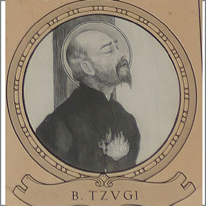

Isusovački blaženici
Svećenik · Mučenik
Bl. Toma Tsuji
1570. – 1627.
Japanski svećenik služio je progonjenim kršćanima pod različitim krinkama. Nakon osobne krize vratio se u Družbu Isusovu i ostao vjeran do mučeništva.
Tekst je preveden i prilagođen uz pomoć umjetne inteligencije.

Izvor slike
- Spomendan
- 7. rujna
- Zaštitništvo
- Nije navedeno u izvoru
- Životni vijek
- 1570. – 1627.
- Djelovanje
- Misije i evangelizacija · Obraćenje i novi počeci · Bolest i osobne kušnje · Progoni i progonstvo · Mučeništvo
- Razdoblje
- 16., 17. stoljeće
- Podrijetlo
- Okolica Omure, Japan
- Ulazak u Družbu Isusovu
- 1589.
- Datum smrti
- 7. rujna 1627.
U kalendaru zbirke koristi se dan smrti. Taj datum nije zasebna potvrda liturgijskoga spomendana.
Životopis
Toma Tsuji rođen je 1570. u plemićkoj obitelji kod Omure. Dopunski isusovački životopis određuje njegovo podrijetlo u Sonogiju i školovanje u Arimi. Družbi Isusovoj pristupio je 1589. Nakon svećeničkoga ređenja djelovao je u južnome Japanu, među ostalim u Hakati. Uredba 1614. odvela ga je u progonstvo u Macao, gdje je ostao četiri godine.
Potajno se vratio 1618., prerušen u trgovca. Kao domaći svećenik mogao se kretati u različitim odijelima: kao obrtnik, gospodin ili prodavač drva obilazio je kršćanske kuće i dijelio sakramente. Pod težinom progona posumnjao je u vlastitu ustrajnost i 1619. zatražio razrješenje od redovničkih zavjeta. Ubrzo je poželio povratak. Nakon šestogodišnje kušnje ponovno je primljen u Družbu i nastavio služenje.
Boravio je kod kršćanina Louisa Makija i njegova sina Johna. Dana 21. srpnja 1626. vojnici su upali u kuću odmah nakon mise i uhitili svu trojicu. Tsuji je priznao da je svećenik. Trinaest je mjeseci proveo u zatvoru u Omuri; obitelj ga je uzalud nagovarala da se odrekne vjere. S ocem i sinom Makijem odveden je u Nagasaki i 7. rujna 1627. spaljen na stratištu izvan grada. Njegov životopis čuva i razdoblje slabosti i povratak redovničkome pozivu, koji je završio zajedničkim svjedočenjem s ljudima što su mu pružili gostoprimstvo.
Tekst je preveden i prilagođen uz pomoć umjetne inteligencije.
Pročitaj više na izvornoj stranici ↗